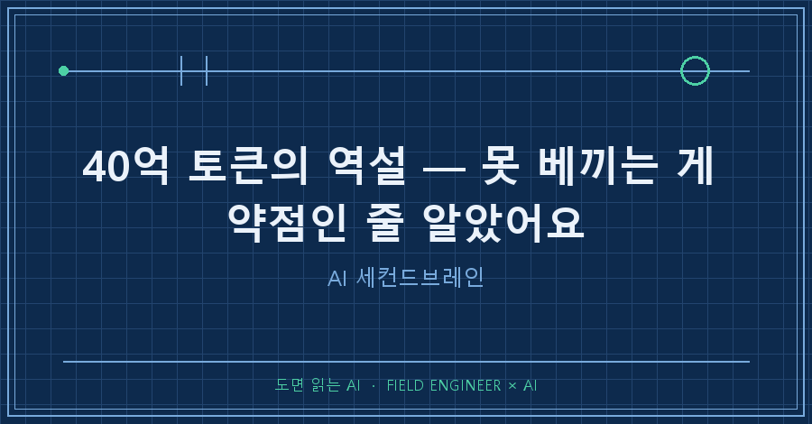

AI 요즘 많이들 쓰죠?
하다못해 초등학생들까지 AI로 일기 쓰는 시대가 되어버렸네요.
AI가 발전하면 윤택해지겠지, 내 일을 덜어주겠지, 다들 그렇게 생각하잖아요?
진짜 실감나게 바뀌고 있네요. 오히려 감당 못할 정도로..
그래서 제 경험담과 각종 시행착오를 여기다가 기록하고 공유하고 싶습니다!
먼저 소개부터 할게요.
저는 마흔 넘은 15년차 공대오빠 엔지니어입니다.
안드로이드 국내 개발 서적이 없을 때부터 모바일 애플리케이션을 개발하고,
선박 엔진제어시스템 국산화 개발 프로젝트도 진행해보고,
배 타고 망망대해를 나가는 커미셔닝 엔지니어에,
중소기업 특성상 공학도가 개발만 하겠습니까.. 개발한 거 팔아야 하니 고객사에 기술영업도 들어가고, 초도양산품은 또 품질보증까지 해줘야 하니 인증에 납품에 클레임 대처까지.
하다 하다 못해 국책과제 사업계획서를 쓰고 사업을 따오고 과제책임자까지 해봤네요.
참 별걸 다 하면서 살아왔습니다.
지금은 그래도 중견기업까지 업그레이드해서 수소 설비 제어판넬 설계하고, PLC 코드 짜고, 현장 가서 결선 확인하는 게 일이에요.
중소기업에서 15년 버티면서 몸으로 배운 걸 아직도 써먹고 있습니다.
근데 AI를 본격적으로 쓰기 시작하면서 좀 이상해졌어요.
혼자서는 절대 시작도 못할 일들을 이뤄내고 있거든요.
예를 들어 설비에 센서가 추가되면 그걸 IO List에 일일이 고치고,
PLC 변수명 추가하며 IO 할당하고,
로직 반영하고,
검증하고,
버그 나면 또 수정하고..
반복 반복 반복..
솔직히 예전 같았으면 며칠이 걸리거나, 마감이 임박하면 밤도 새 가면서 어떻게든 쳐냈던 일이에요.
수백 장짜리 도면 Description을 일일이 프린트해서 IO List와 교차검증하던 시절도 있었고요.
근데 AI 쓰면서 이 모든 게 몇 분 만에 되는 걸 직접 경험했습니다.
여러분도 이렇게 AI를 쓰고 계시나요?
1. 40억 토큰이라는 숫자
숫자를 직접 확인한 날이 있었습니다.
토큰 40억 개. 책으로 치면 4만 권쯤 된다고 해요.
처음엔 실감이 안 났고, 그다음엔 솔직히 좀 소름 돋았어요.
내가 AI랑 이만큼을 주고받았다고? 싶더라고요.
돌아보니 저는 제 모든 맥락을 AI한테 갈아넣고 있었어요.
제가 누군지, 어떻게 일하는지, 무슨 실수를 반복하는지, 뭘 기준으로 판단하는지까지 전부 기록과 규칙으로 쌓았습니다.
작업 이력 수백 건, 지식 문서 500개, 23만 줄이에요.
그래서 AI가 저처럼 일해요.
아니, 저라는 사람의 말투나 심리, 그리고 원하는 걸 잘 알아들어요.
'아' 하면 '어' 하죠.
2. 처음엔 안타까웠어요
이걸 제품으로 만들고 싶었어요.
다들 AI 하면 떠올리는 거 있잖아요, 아이언맨에 나오는 자비스~
저도 제 개인 자비스를 만들고 싶었거든요.
근데 결론이 났어요.
이건 상용화가 안 되겠더라고요.
왜냐면 이 효율은 제가 40억 토큰을 직접 갈아넣어서 나온 거거든요.
남들은 그 노동을 안 해요. 못 하고요.
제 설정을 통째로 복사해서 옆자리 컴퓨터에 깔아줘도, 그 책상에서는 그냥 평범한 챗봇이에요. 재현이 안 되는 거죠.
좋은 걸 만들었는데 나눠줄 수가 없다는 게 한동안 안타까울 뿐이었습니다.
3. 근데 논리가 거꾸로더라고요
곱씹어보니 이상했어요. 제가 약점이라고 생각한 게 사실은 정반대였던 거예요.
재현 불가능성, 그게 해자(moat)거든요.
해자가 뭐냐면 성 둘레에 파놓은 물웅덩이예요. 적이 못 넘어오게 하는 거요.
사업에서는 경쟁자가 쉽게 못 따라하는 우위를 말해요. 돈 된다 싶으면 다 베끼는 세상에서 못 베끼게 막아주는 벽이죠.
제가 40억 토큰을 갈아넣어야 했다는 건, 뒤집으면 남이 하루아침에 못 쌓는다는 뜻이에요.
약점이 아니라 진입장벽이었던 거예요.
4. 옵시디언은 왜 실패할까요
세컨드브레인 도구들이 왜 대부분의 사람한테 실패하는지도 여기서 보였어요.
저도 메모 앱 몇 번 갈아탔거든요. 시스템 만들고 폴더 다듬고 하다가 알았어요.
도구가 문제가 아니라 정리하는 노동 자체가 병목이더라고요.
세컨드브레인이 뭔지부터 설명하면 말 그대로 '두 번째 뇌'예요.
메모든 자료든 머리 밖 한곳에 모아두고 서로 연결해놨다가, 내 머리는 잊어버려도 필요할 때 꺼내 쓰자는 개념이죠.
옵시디언이나 노션 같은 앱으로 만드는 게 한동안 유행이었고요.
그 도구들은 맥락을 쌓고 연결하는 노동을 사용자한테 떠넘겨요.
백링크 걸고, 태그 달고, 구조 잡고요.
사람들은 그 노동을 안 해요. 저도 매한가지였죠.
정리하면 도구들의 실패는 노동을 전가해서고,
제가 된 이유는 그 노동을 40억 토큰어치 갈아넣은 결과예요.
그럼 제품의 답은 하나, 그 노동을 AI가 대신하게 만들면 됩니다.
5. 진짜 병은 따로 있었어요
여기서 더 큰 문제를 봤어요.
지식 문서를 500개 쌓았는데 검색하면 절반 넘게 못 찾아요.
대화 기록이 200메가 넘게 쌓였는데 거기서 글감으로 캐낸 건 고작 세 건이에요.
만들 줄만 알았지 꺼낼 줄을 몰랐던 거죠.
AI 생산 속도가 사람 소화 속도를 추월해요. 그 차액이 고스란히 부채로 쌓이고요.
만든 건 많은데 못 찾고, 적은 건 많은데 휘발되고.
AI가 너무 빨라서 사람이 못 따라가는 병이에요.
이거 저만의 문제가 아닐 거예요.
AI를 제대로 쓰기 시작한 분들은 곧 전부 겪어요.
그렇다고 답이 생산을 줄이는 건 아니거든요. 무기를 버릴 순 없잖아요.
소화까지 AI한테 맡기는 거예요.
던지는 건 사람, 엮는 건 AI요.
6. 그래서 지금 어디까지 왔냐면
상용화는 아직 멀어요. 인정해요.
검색해서 찾아내는 비율이 아직 절반이 안 되고, 맥락 축적을 자동화하는 마지막 난제가 남아 있어요.
지금 제 시스템은 그걸 흉내 내는 수준이고요.
그래도 뭘 풀어야 하는지는 정해졌어요.
제일 어려운 것, 그러니까 끝까지 쌓으면 진짜 된다는 건 이미 제 손으로 확인했으니까요.
이제 안타까워할 일이 아니라 풀면 되는 문제 하나가 남은 거예요.
AI가 쏟아내는 속도에 숨이 찬 경험, 다들 한 번쯤 하셨을 거예요.
저는 40억 토큰을 갈아넣고 나서야 알았어요.
그게 병이 아니라 해자가 될 수 있다는 걸요.
그래서 앞으로 그 40억 토큰 안에 쌓인 삽질과 실패와 발견들을 한 편씩 꺼내서 글로 써보려고 합니다!
솔직히 글쓰기는 저한테 아직 어색한데, raw data가 있어야 글감이 되고 글감이 있어야 나중에 책도 쓸 수 있을 것 같아서요.
다음 글에서는 센서 열 개짜리 며칠 작업이 반나절에 끝난 그날 이야기를 자세히 써볼게요.
혹시 여러분도 AI가 만들어준 걸 못 찾아서 다시 만든 적 있으신가요?
makefield.ai